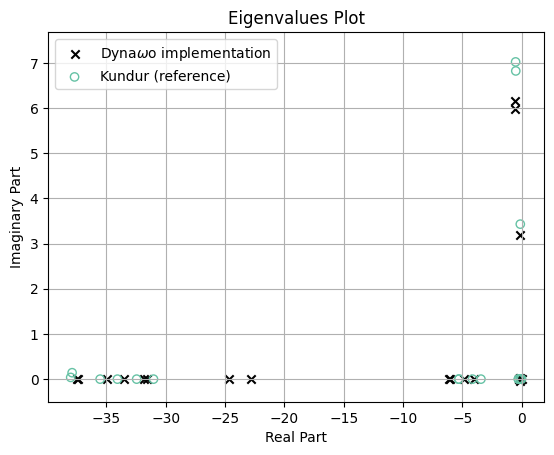
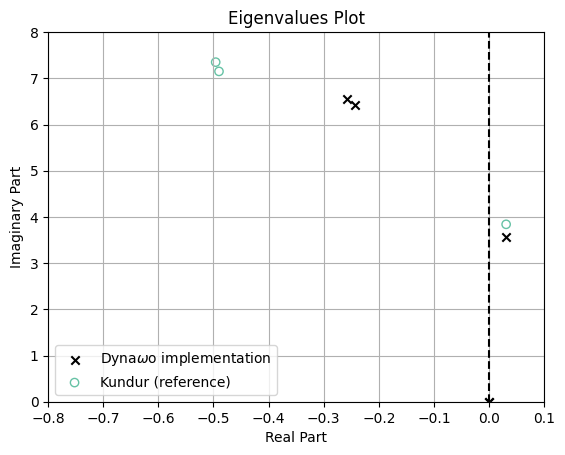
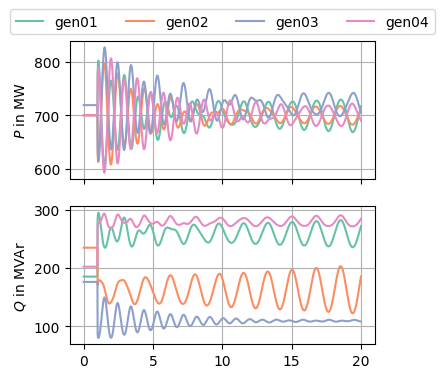

Kundur two-area system
Use case purpose and context
The Kundur two area system is a test system for studies on dynamic stability, oscillations, damping, power exchange and other use cases. It is a widely used standard test case defined in Kundur’s Power system stability and control [1] (Fig. E12.8).
Table of references
[1] P. Kundur, Power System Stability and Control. New York: McGraw-Hill Education Ltd, 1994.
[2] R. Ramos and I. Hiskens, “PES-TR18: Benchmark Systems for Small-Signal Stability Analysis and Control,” Aug. 2015.
[3] Shackshaft and Henser, “Model of generator saturation for use in power system studies.” Apr. 1979.
Network description

Figure 1: Kundur’s two-area test system [1]
In Figure 1 the test system is shown. As [1] describes it, it consists of two similar areas connected by a weak tie.
The parameters are listed in Section 5. The system consists of 11 buses connected by lines or transformers. There are 4 generators G1…G4, two loads L7 and L9 as well as two shunt capacitors C7 and C9.
Static and Dynamic models description
This test case includes the following components:
Generators
Governors
The generator model does not include a governor.
AVRs
The following AVRs are used in this test system, depending on the used scenario:
- no AVR: Manual excitation, i.e. constant field voltage
- AVR DC1A (similar to DC1C, see colib page here)
- \[K_\mathrm{a}=\] 20 pu
- \[K_\mathrm{a}=\] 200 pu
- AVR ST1A (similar to ST1C, see colib page here)
- (with/without transient gain reduction (TGR) and/or power system stabilizer (PSS))
For details on the scenarios, see Section 6. The parameters are given in the tables of Section 5.
Loads (static ZIP model)
Equation 1 and Equation 2 define ZIP load model. Depending on the coefficients in Table 1 it models a constant impedance, current or power load.
\[ P = P_\mathrm{Ref} \cdot (1 + \Delta P) \cdot \left(Z_\mathrm{p} \cdot \left(\frac{U}{U_\mathrm{0}}\right)^2 + I_\mathrm{p} \cdot \frac{U}{U_\mathrm{0}} + P_\mathrm{p}\right) \qquad(1)\] \[ Q = Q_\mathrm{Ref} \cdot (1 + \Delta Q) \cdot \left(Z_\mathrm{q} \cdot \left(\frac{U}{U_\mathrm{0}}\right)^2 + I_\mathrm{q} \cdot \frac{U}{U_\mathrm{0}} + P_\mathrm{q}\right) \qquad(2)\]
Table 1: ZIP Load parameters
| parameter | description |
|---|---|
| \[I_\mathrm{p}\] | Current coefficient for active power |
| \[I_\mathrm{q}\] | Current coefficient for reactive power |
| \[P_\mathrm{p}\] | Power coefficient for active power |
| \[P_\mathrm{q}\] | Power coefficient for reactive power |
| \[Z_\mathrm{p}\] | Impedance coefficient for active power |
| \[Z_\mathrm{q}\] | Impedance coefficient for reactive power |
In [1] it is stated that the active power should be modelled as constant current and the reactive power as constant impedance: All coefficients can be set to zero except \[I_\mathrm{p} = Z_\mathrm{q} = 1\].
[!IMPORTANT]
Loads L7, L9 and shunt capacitors C7, C9 can all be modeled as ZIP loads. To reproduce the load flow results from Kundur, the loads need to be modeled as constant power (P and Q), while the shunt capacitors need to be modeled as constant impedance.
Input Data
Table 2: Synchronous machine parameters
| parameter | value | pu base |
|---|---|---|
| \[A_\mathrm{Sat}\] | 0.015 | - |
| \[B_\mathrm{Sat}\] | 9.6 | - |
| \[H\] | 6.5 s (for G1 and G2) and 6.175 pu (for G3 and G4) | - |
| \[K_\mathrm{D}\] | 0 | - |
| \[\Psi_\mathrm{T1}\] | 0.9 | - |
| \[R_\mathrm{a}\] | 0.0025 pu | \[U_\mathrm{n\,SM}^2 / S_\mathrm{r\,SM}\] |
| \[S_\mathrm{r\,SM}\] | 900 MVA | - |
| \[T_\mathrm{d0}'\] | 8.0 s | - |
| \[T_\mathrm{d0}''\] | 0.03 s | - |
| \[T_\mathrm{q0}'\] | 0.4 s | - |
| \[T_\mathrm{q0}''\] | 0.05 s | - |
| \[U_\mathrm{n\,SM}\] | 20 kV | - |
| \[X_\mathrm{d}\] | 1.8 pu | \[U_\mathrm{n\,SM}^2 / S_\mathrm{r\,SM}\] |
| \[X_\mathrm{d}'\] | 0.3 pu | \[U_\mathrm{n\,SM}^2 / S_\mathrm{r\,SM}\] |
| \[X_\mathrm{d}''\] | 0.25 pu | \[U_\mathrm{n\,SM}^2 / S_\mathrm{r\,SM}\] |
| \[X_\mathrm{l}\] | 0.2 pu | \[U_\mathrm{n\,SM}^2 / S_\mathrm{r\,SM}\] |
| \[X_\mathrm{q}\] | 1.7 pu | \[U_\mathrm{n\,SM}^2 / S_\mathrm{r\,SM}\] |
| \[X_\mathrm{q}'\] | 0.55 pu | \[U_\mathrm{n\,SM}^2 / S_\mathrm{r\,SM}\] |
| \[X_\mathrm{q}''\] | 0.25 pu | \[U_\mathrm{n\,SM}^2 / S_\mathrm{r\,SM}\] |
Table 3: AVR DC1A parameters, see [2]
| Parameter | Value | Description |
|---|---|---|
| \[A_\mathrm{ex}\] | 0.0056 pu | Exciter saturation factor |
| \[B_\mathrm{ex}\] | 1.075 pu | Exciter saturation factor |
| \[K_\mathrm{A}\] | 20 pu | AVR steady state gain |
| \[K_\mathrm{E}\] | 1 pu | Exciter feedback time constant |
| \[K_\mathrm{F}\] | 0.125 pu | Stabilizer feedback gain |
| \[T_\mathrm{A}\] | 0.055 s | AVR equivalent time constant |
| \[T_\mathrm{B}\] | 0 s | TGR block 1 denominator time constant |
| \[T_\mathrm{C}\] | 0 s | TGR block 2 numerator time constant |
| \[T_\mathrm{C}\] | 0 s | TGR block 2 numerator time constant |
| \[T_\mathrm{C}\] | 0 s | TGR block 2 numerator time constant |
| \[T_\mathrm{E}\] | 0.36 s | Exciter time constant |
| \[T_\mathrm{F1}\] | 1.8 s | Stabilizer feedback time constant |
| \[T_\mathrm{R}\] | 0.05 s | Voltage transducer time constant |
| \[V_\mathrm{R\,max}\] | 5 pu | Max. AVR output |
| \[V_\mathrm{R\,min}\] | -3 pu | Min. AVR output |
Table 4: AVR ST1A parameters, see [2]
| parameter | Value | Description |
|---|---|---|
| \[I_\mathrm{LR}\] | 3 pu | Field current instantaneous limit |
| \[K_\mathrm{A}\] | 200 pu | AVR steady state gain |
| \[K_\mathrm{C}\] | 0 pu | Commutation factor for rectifier bridge |
| \[K_\mathrm{F}\] | 0 pu | Stabilizer feedback gain |
| \[K_\mathrm{LR}\] | 0 pu | Field current limiter gain |
| \[T_\mathrm{A}\] | 0 s | Rectifier bridge equivalent time constant |
| \[T_\mathrm{B}\] | 10 s | TGR block 1 denominator time constant |
| \[T_\mathrm{B1}\] | 0 s | TGR block 1 denominator time constant |
| \[T_\mathrm{C}\] | 1 s | TGR block 1 numerator time constant |
| \[T_\mathrm{C1}\] | 0 s | TGR block 2 numerator time constant |
| \[T_\mathrm{F}\] | 1 s | Stabilizer feedback time constant |
| \[T_\mathrm{R}\] | 0.01 s | Voltage transducer time constant |
| \[V_\mathrm{A\,max}\] | 4 pu | Max. AVR output |
| \[V_\mathrm{A\,min}\] | -4 pu | Min. AVR output |
| \[V_\mathrm{I\,max}\] | 99 pu | Max. voltage error |
| \[V_\mathrm{I\,min}\] | -99 pu | Min. voltage error |
| \[V_\mathrm{R\,max}\] | 4 pu | Max. rectifier bridge output |
| \[V_\mathrm{R\,min}\] | -4 pu | Min. rectifier bridge output |
Table 5: PSS parameters, see [2]
| parameter | Value | Description |
|---|---|---|
| \[A_\mathrm{1}\] | 0 | 2nd order denominator coefficient |
| \[A_\mathrm{2}\] | 0 | 2nd order denominator coefficient |
| \[A_\mathrm{3}\] | 0 | 2nd order numerator coefficient |
| \[A_\mathrm{4}\] | 0 | 2nd order numerator coefficient |
| \[A_\mathrm{5}\] | 0 | 2nd order denominator coefficient |
| \[A_\mathrm{6}\] | 0 | 2nd order denominator coefficient |
| \[K_\mathrm{S}\] | 20 pu | PSS gain |
| \[L_\mathrm{S\,max}\] | 0.05 pu | PSS max. output |
| \[L_\mathrm{S\,min}\] | -0.05 pu | PSS min. output |
| \[T_\mathrm{1}\] | 0.05 s | 1st lead-lag numerator time constant |
| \[T_\mathrm{2}\] | 0.02 s | 1st lead-lag denominator time constant |
| \[T_\mathrm{3}\] | 3 s | 2nd lead-lag numerator time constant |
| \[T_\mathrm{4}\] | 5.4 s | 2nd lead-lag denominator time constant |
| \[T_\mathrm{5}\] | 10 s | Washout block numerator time constant |
| \[T_\mathrm{6}\] | 10 s | Washout block denominator time constant |
| \[V_\mathrm{CL}\] | 0 pu | Lower voltage limit for PSS operation |
| \[V_\mathrm{CU}\] | 0 pu | Upper voltage limit for PSS operation |
Table 6: Step-up transformer parameters
| parameter | value | pu base |
|---|---|---|
| off-nominal ratio | 1 | - |
| \[S_\mathrm{r\,Tr}\] | 900 MVA | - |
| \[ü\] | 230kV/20kV | - |
| \[\underline{X}_\mathrm{Tr}\] | 0 + j0.15 pu | \[U_\mathrm{n\,Tr}^2 / S_\mathrm{r\,Tr}\] |
Table 7: Grid parameters
| parameter | value | pu base |
|---|---|---|
| \[b_\mathrm{C}\] | 0.00175 pu / km | \[S_\mathrm{r\,grid} / U_\mathrm{n\,grid}^2\] |
| line length \[l\] | see Figure 1 | - |
| \[r\] | 0.0001 pu / km | \[U_\mathrm{n\,grid}^2 / S_\mathrm{r\,grid}\] |
| \[S_\mathrm{r\,grid}\] | 100 MVA | - |
| \[U_\mathrm{n\,grid}\] | 230 kV | - |
| \[x_\mathrm{L}\] | 0.001 pu / km | \[U_\mathrm{n\,grid}^2 / S_\mathrm{r\,grid}\] |
Table 8: Load parameters
| parameter | value |
|---|---|
| \[P_\mathrm{C7}\] | 0 MW |
| \[P_\mathrm{C9}\] | 0 MW |
| \[P_\mathrm{L7}\] | 967 MW |
| \[P_\mathrm{L9}\] | 1767 MW |
| \[Q_\mathrm{C7}\] | 200 MVAr |
| \[Q_\mathrm{C9}\] | 350 MVAr |
| \[Q_\mathrm{L7}\] | 100 MVAr |
| \[Q_\mathrm{L9}\] | 100 MVAr |
Scenarios
The following sceniarios are taken from [1] and [2], which are also considered for reference results.
The shown results are obtained from the Dyna\[\omega\]o Modelica implementation of the test case.
Load flow
The load flow results are given in Table 9 and Table 10.
Table 9: Loadflow voltages of Dynawo implementation
| Bus name | Complex voltage in pu | Kundur reference voltage in pu |
|---|---|---|
| bus01 | \[1.030 \angle 20.200°\] | \[1.03 \angle 20.2°\] |
| bus02 | \[1.010 \angle 10.433°\] | \[1.01 \angle 10.5°\] |
| bus03 | \[1.030 \angle -6.885°\] | \[1.03 \angle -6.8°\] |
| bus04 | \[1.010 \angle -17.074°\] | \[1.01 \angle -17.0°\] |
| bus05 | \[1.006 \angle 13.737°\] | - |
| bus06 | \[0.978 \angle 3.651°\] | - |
| bus07 | \[0.961 \angle -4.759°\] | - |
| bus08 | \[0.949 \angle -18.633°\] | - |
| bus09 | \[0.971 \angle -32.234°\] | - |
| bus10 | \[0.983 \angle -23.819°\] | - |
| bus11 | \[1.008 \angle -13.511°\] | - |
Table 10: Loadflow generator powers of Dynawo implementation
| Generator name | Complex power in MVA | Kundur reference power in MVA |
|---|---|---|
| G1 | \[700.105 + \mathrm{j}185.067\] | \[700 + \mathrm{j}185\] |
| G2 | \[700.000 + \mathrm{j}234.676\] | \[700 + \mathrm{j}235\] |
| G3 | \[719.000 + \mathrm{j}175.986\] | \[719 + \mathrm{j}176\] |
| G4 | \[700.000 + \mathrm{j}202.071\] | \[700 + \mathrm{j}202\] |
- The active power exchange from Area 1 to Area 2 (see Figure 1) is 400.431 MW in the Dyna\[\omega\]o implementation and 400 MW in the Kundur reference.
Example a
Example a examines small-signal performance of the system with constant excitation.
- All four generators are on manual excitation (field voltage \[E_\mathrm{fd} = \mathrm{const.}\])
- Constant current characteristics of active load components
- Constant impedance characteristics of reactive load components
Figure 2 shows the result of an eigenvalue analysis of this system, compared to the reference values from [1]. The remaining differences probalby originate from differing model implementations of the synchronous machines in Dyna\[\omega\] compared to the ones used by Kundur.

Figure 2: Eigenvalues of the system with constant excitation voltage
Example b
[!NOTE]
To obtain a steady state initial condition, the exact values for the generators active and reactive power and voltage angles from load flow Section 6.1 need to be used as initial values in the dynamic simulation.
[!NOTE]
In the Dyna\[\omega\]o implementation, if the voltage transducer time constant \[T_\mathrm{R}\] = 0.01 s, then the voltage measurement first order lag and the field flux linkage \[\lambda_\mathrm{f}\] oscillate against each other with high amplitude. This is not represented in the reference results of [2]. To avoid this behaviour, set \[T_\mathrm{R} = 10^{-6}\] s. This has been done for the Dyna\[\omega\]o implementation.
Part 1: Self-excieted dc exciter (DC1A)
Instead of constant excitation voltage as in Section 6.2, now the self-excited DC exciter DC1A is used. For parameters, see Table 3.
In [2] this case has not been taken into account for comparative analysis. Like there, it has not been investigated using the Dyna\[\omega\]o implementation.
Part 2: Thyristor exciter (ST1A) with high transient gain
Instead of constant excitation voltage as in Section 6.2, now the thyristor exciter ST1A is used. For parameters, see Table 3. It has high transient gain, i.e. no transient gain reduction.
The implementation in Dyna\[\omega\]o does not allow to set saturation parameters \[A_\mathrm{sat}\] and \[B_\mathrm{sat}\] as in Table 2 because its synchronous machine model uses a different saturation model. Instead of the model from Kundur [1], the Shackshaft model [3] is used. To get the unstable pole close to the one in the Kundur reference, the Shackshaft parameters have been set to \[m_\mathrm{d}=1\], \[m_\mathrm{q}=1\], \[n_\mathrm{d}=9\], \[n_\mathrm{q}=9\].
The voltage transducer time constant has been

Figure 3: Unstable eigenvalue of the system with exciter ST1A
As in [2], a steps to the synchronous machines’ voltege references have been applied according to Table 11. Those were selected to excite the inter-area oscillation mode and the other electromechanical modes in the system [2].
Table 11: Voltage reference steps as in [2]
| Generator | Step of \[U_\mathrm{ref}\] |
|---|---|
| G1 | +3% |
| G2 | -1% |
| G3 | -3% |
| G4 | +1% |
The step response of the generators can be seen in Figure 4.

Figure 4: Unstable step response of the system with ST1A without transient gain reduction
Part 3: Thyristor exciter (ST1A) with transient gain reduction (TGR)
Simlilarly to Section 6.3.2, the ST1A exciter is used. In this case, transient gain reduction (TGR) is activated by setting \[T_\mathrm{A} = 1\].
Part 4: Thyristor exciter (ST1A) with high transient gain and PSS
Simlilarly to Section 6.3.2, the ST1A exciter is used. In this case, a power system stabilizer according to [1] (Figure 6-8) is activated and parameterized according to Table 5.
Open source implementations
This model has been successfully implemented in :
| Software | URL | Language | Open-Source License | Last consulted date | Comments |
|---|---|---|---|---|---|
| Open Modelica / Dynawo | Dynawo | modelica | MPL v2.0 | 15/08/2024 | - |